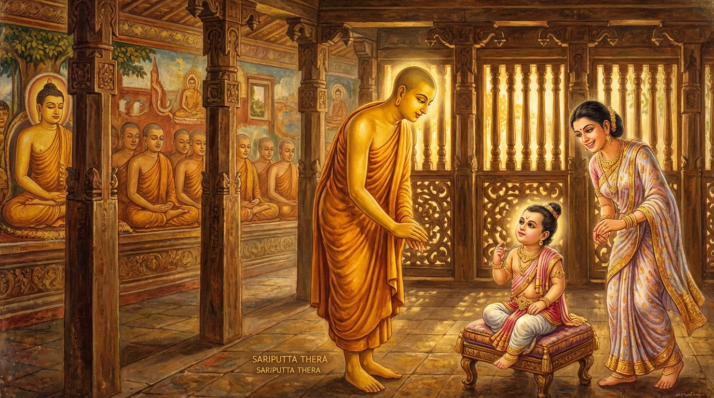

10. අසාතරූප ජාතකය (100)
“අසාතං සාතරූපෙන” යනුවෙන් ඇරඹෙන මෙම ජාතක කථාව බුදුරජාණන් වහන්සේ කුණ්ඩිය නුවර ඇසුරු කොට කුණ්ඩධාන වනයෙහි වැඩවසන සමයෙහි කෝලිය රජුගේ දියණිය වූ සුප්පවාසා උපාසිකාව අරබයා දේශනා කරන ලදී. එකල ඇය සත් වසරක් මුළුල්ලේ දරු ගැබක් කුසින් දරා සිටි අතර, සත් දිනක් මුළුල්ලේ ප්රසව වේදනාවෙන් පෙළෙමින් දරුවා බිහි කළ නොහැකිව සිටියාය. ඇයට මෙසේ අධික වේදනාවන් හටගත්තේය. ඇය මෙසේ අධික වේදනාවෙන් පීඩිතව සිටියදීත්, “ඒ භාග්යවතුන් වහන්සේ ඒකාන්තයෙන්ම සම්මා සම්බුද්ධ වන සේක, යමෙක් මෙබඳු දුක් ප්රහාණය පිණිස දහම් දෙසන සේක. ඒ භාග්යවතුන් වහන්සේගේ ශ්රාවක සංඝයා ඒකාන්තයෙන්ම සුප්රටිපන්න වන සේක, යමෙක් මෙබඳු දුක් ප්රහාණය පිණිස පිළිපන් සේක. යම් තැනක මෙබඳු දුක් නැද්ද, ඒ නිර්වාණය ඒකාන්තයෙන්ම පරම සැපයකි” යි යන මේ තුන් සිතුවිලිවලින් යුක්තව ඒ වේදනාව ඉවසා සිටියාය. ඇය තම ස්වාමිපුරුෂයා කැඳවා තමාගේ පුවතත්, තම වන්දනාවත් බුදුරජාණන් වහන්සේට දැනුම් දෙන ලෙස පවසා උන්වහන්සේ වෙත යැව්වාය. බුදුරජාණන් වහන්සේ ඒ පුවත අසා, “සුප්පවාසා කෝලිය දියණිය සුවපත් වේවා! නිරෝගී වේවා! නිරෝගී පුතකු බිහි කෙරේවා!” යි වදාළ සේක. බුදුරජාණන් වහන්සේගේ වචනයත් සමඟම ඇය සුවපත් වී නිරෝගීව නිරෝගී පුතකු බිහි කළාය. ඇගේ ස්වාමිපුරුෂයා නිවසට ගොස් ඇය දරුවා බිහි කර ඇති බව දැක, “පින්වතුනි, මෙය නම් පුදුමයකි!” යි තථාගතයන් වහන්සේගේ ආනුභාවය පිළිබඳව අතිශයින් පුදුමයට හා විස්මයට පත් විය.
සුප්පවාසා ද දරු ප්රසූතියෙන් පසු බුද්ධ ප්රමුඛ මහා සංඝරත්නයට සත් දිනක් දන් දෙනු කැමැතිව, ආරාධනය සඳහා නැවතත් තම ස්වාමිපුරුෂයා යැව්වාය. ඒ වන විට මහා මුගලන් තෙරුන්ගේ උපස්ථායකයෙකු විසින් බුද්ධ ප්රමුඛ සංඝයා වහන්සේට ආරාධනා කර තිබුණි. ශාස්තෘන් වහන්සේ සුප්පවාසාගේ දානයට ඉඩ ලබා දෙනු පිණිස තෙරුන් වහන්සේව එම දායකයා වෙත යවා, ඔහුව කැමැති කරවාගෙන භික්ෂු සංඝයා සමඟ සත් දිනක් මුළුල්ලේ ඇගේ දානය පිළිගත් සේක. සත්වැනි දිනයෙහි සුප්පවාසා සීවලී කුමරු සරසා බුදුරජාණන් වහන්සේටත් භික්ෂු සංඝයාටත් වැන්දවූවාය. භික්ෂූන් වහන්සේලාට පිළිවෙළින් වන්දවාගෙන යද්දී සැරියුත් තෙරුන් වෙත පැමිණි කල්හි තෙරුන් වහන්සේ ඔහු සමඟ, “සීවලී, නුඹට ඉවසිය හැකි ද?” යි පිළිසඳර කථා කළහ. එවිට කුමරු “ස්වාමීනි, මට සැපයක් නම් කොයින් ද? මම සත් වසරක් ලොහොඬු සැළියක (මවගේ කුසෙහි) විසුවෙමි” යි තෙරුන් සමඟ මෙබඳු කථාවක් කළේය. සුප්පවාසා ඒ වචන අසා “සත් දිනක් වයසැති මාගේ පුත්රයා අනුබුදු දම් සෙනෙවිඳුන් සමඟ කථා කරයි” යි සතුටට පත් වූවාය. ශාස්තෘන් වහන්සේ, “සුප්පවාසාවෙනි, මෙබඳු වූ තවත් දරුවන් ලබන්නට කැමැති ද?” යි විමසූ සේක. “ස්වාමීනි, මෙබඳු වූ තවත් දරුවන් සත් දෙනෙකු ලබන්නට ඉදින් මම කැමැත්තෙමි” යි ඇය පැවසුවාය. ශාස්තෘන් වහන්සේ උදානයක් පළ කොට අනුමෝදනාව සිදුකර වැඩම කළ සේක. සීවලී කුමරු ද සත් අවුරුදු වියෙහිදී ම සසුනට සිත පහදවා පැවිදි වී, උපසම්පදාව ද ලබා, පින්වන්ත වී ප්රත්යලාභීන් අතර අග්ර ස්ථානයට පත්ව, මහ පොළොව කම්පා කරවමින් රහත් බවට පැමිණ පුණ්යවන්තයන් අතර අග්ර ස්ථානයට (එතදග්ගයට) පත් විය.

ඉක්බිති එක් දිනක් භික්ෂූන් වහන්සේලා දම් සභාවෙහි රැස්ව, “ඇවැත්නි, සීවලී තෙරුන් වහන්සේ මෙබඳු මහා පින් ඇත්තෝය, ප්රාර්ථනා කරන ලද පැතුම් ඇත්තෝය, මේ අන්තිම ආත්ම භාවයයි. එසේ වුව ද සත් වසරක් ලොහොඬු සැළියක (ගර්භාෂයේ) වාසය කර සත් දිනක් මූඪ ගර්භව (දරුවා හිරවීමෙන්) සිටියේය. අහෝ! මව සහ පුතණුවන් මහත් දුකක් වින්දහ. මොවුන් කිනම් කර්මයක් කළෝ ද?” යි කථාවක් ඇති කළහ. ශාස්තෘන් වහන්සේ එතැනට වැඩම කර, “මහණෙනි, කිනම් කථාවකින් යුතුව මේ දැන් හුන්නාහු ද?” යි විමසා, “මේ නම් කථාවෙනි” යි පැවසූ කල්හි, “මහණෙනි, සීවලී මහා පින් ඇත්තෙකු වුව ද, සත් වසරක් මව් කුසෙහි විසීමත්, සත් දිනක් මූඪ ගර්භව දුක් විඳීමත් ඔහු විසින්ම කරන ලද කර්මයක් මුල් කොට ඇත්තකි. සුප්පවාසාට ද සත් වසරක් කුසින් දරු ගැබ දැරීමේ දුකත්, සත් දිනක් මූඪ ගර්භ දුකත් තමා විසින් කරන ලද කර්මයක් මුල් කොටගෙනම සිදුවූවකි” යි වදාරා, ඔවුන් විසින් අයදින ලද්දේ අතීත කථාව ගෙනහැර දැක්වූ සේක.
අතීතයේ බරණැස් නුවර බ්රහ්මදත්ත රජු රාජ්යය කරන සමයේ, බෝධිසත්වයන් වහන්සේ ඔහුගේ අගමෙහෙසියගේ කුසෙහි පිළිසිඳ ගෙන, වැඩිවියට පැමිණ තක්සලා නුවරින් සියලු ශිල්ප උගෙන පිය රජුගේ ඇවෑමෙන් රාජ්යයට පත්ව දැහැමින් රාජ්යය කළේය. එකල්හි කොසොල් රජු විශාල සේනාවක් සමඟ පැමිණ බරණැස් නුවර අල්ලාගෙන, රජු මරා ඔහුගේ අගමෙහෙසිය තමාගේ අගමෙහෙසිය කර ගත්තේය. බරණැස් රජුගේ පුත්රයා පිය රජු මියයන අවස්ථාවේ දී අපද්රව්ය බැහැර කරන දොරටුවෙන් (කාණු කටින්) පලා ගොස්, සේනාව රැස් කරගෙන බරණැස් නුවරට නුදුරින් කඳවුරු බැඳ, ඒ කොසොල් රජුට “රාජ්යය හෝ දෙන්න. නොඑසේනම් යුද්ධය හෝ දෙන්න” යැයි හසුනක් යැවීය. හෙතෙම “යුද්ධය දෙමි” යි පෙරළා හසුන් යැවීය. රාජකුමාරයාගේ මව ඒ පුවත අසා, “යුද්ධ කිරීමෙන් පලක් නැත. සියලු දිශාවලින් ගමනාගමනය නවත්වා බරණැස් නුවර වටලන්න. එවිට දර, දිය සහ ආහාර අවසන් වීමෙන් වෙහෙසට පත්වන මිනිසුන් සිටින නුවර යුද්ධයකින් තොරවම අල්ලා ගත හැකි වන්නේය” යි රහසින් හසුනක් යැව්වාය. ඔහු මවගේ හසුන අසා දින හතක් මුළුල්ලේ ගමනාගමනය නවත්වා නගරය වටලා සිටියේය. නගරවාසීහු පිටතට යෑමට හෝ ඇතුළට ඒමට නොහැකිව පීඩාවට පත්ව, සත්වැනි දිනයේ දී ඒ කොසොල් රජුගේ හිස කපා කුමාරයාට ලබා දුන්හ. කුමාරයා නගරයට පිවිස රාජ්යය භාරගෙන ආයු කෙළවර කම් වූ පරිදි මිය ගියේය.
ඔහු එකල දින හතක් මුළුල්ලේ ජනයාගේ ගමනාගමනය නවත්වා නගරය අවහිර කොට අල්ලා ගැනීමේ පාප කර්මයේ විපාක වශයෙන්, මේ ආත්ම භාවයේ දී සත් වසරක් ලොහොඬු සැළියක (මව් කුස) වසන්නටත්, සත් දිනක් මූඪ ගර්භ භාවයට (ප්රසූත කර ගත නොහැකිව හිරවී සිටීමටත්) පත් විය. එහෙත් ඔහු පදුමුත්තර බුදුරජාණන් වහන්සේගේ පාද මූලයේ දී “ලාභීන් අතර අග්ර වෙම්වා” යි මහ දන් දී යම් ප්රාර්ථනාවක් කළේ ද, විපස්සී බුදුරජාණන් වහන්සේගේ කාලයේ දී නුවරවැසියන් සමඟ එක්ව දහසක් වටිනා උක් හකුරු සහ දීකිරි දන් දී යම් ප්රාර්ථනාවක් කළේ ද, එහි ආනුභාවයෙන් ලාභීන් අතර අග්ර බවට පත් විය. සුප්පවාසා ද, “දරුව, නගරය අවහිර කොට අල්ලා ගන්න” යැයි පණිවිඩ යැවූ හෙයින්, සත් වසරක් දරු ගැබ කුසින් දැරීමටත්, සත් දිනක් මූඪ ගර්භව දුක් විඳීමටත් සිදු විය.
ශාස්තෘන් වහන්සේ මෙම අතීත කථාව ගෙනහැර දක්වා, අභිසම්බුද්ධ වූ සේක් මෙම ගාථාව වදාළ සේක.
“අමිහිරි දෙය මිහිරි ආකාරයෙන් ද, අප්රිය දෙය ප්රිය ස්වරූපයෙන් ද, දුක සැප ස්වරූපයෙන් ද පැමිණ මුළා වූ (ප්රමාදී) පුද්ගලයා යටපත් කරයි.”
එහි අසාතං සාතරූපෙන යනු අමිහිරි දෙය ම මිහිරි දෙයක් ලෙස පෙනී සිටීමෙනි. පමත්තමතිවත්තතී යනු අමිහිරි වූ, අප්රිය වූ, දුක් සහගත වූ යන මේ ත්රිවිධ දෑ ම, ඒ මිහිරි යැයි හැඟෙන ස්වරූප ආදී ආකාරයෙන් සිහියෙන් තොර වූ (ප්රමාදී) පුද්ගලයා ඉක්මවා යයි, මැඩ පවත්වයි, යටපත් කරයි යන අර්ථයි. භාග්යවතුන් වහන්සේ මෙය වදාරන ලද්දේ, යම් හෙයකින් ඒ මව සහ පුතා ගැබ් දැරීම හා ගැබ තුළ විසීම නම් වූ අමිහිරි වූ දෙයින් යටපත් වූවාහු ද, පෙර (අතීතයේ) නගරය වටලා සිටීම නමැති මිහිරි යැයි සිතූ දෙයෙහි ප්රතිරූපයෙන් යටපත් වූවාහු ද, යම් හෙයකින් දැන් ඒ උපාසිකාව නැවතත් සත් වරක් මෙබඳු වූ අමිහිරි වූ, අප්රිය වූ, දුක් සහගත දේ ප්රේමයට වස්තු වූ පුත්රයා නමැති මිහිරි යැයි සිතූ දෙයෙහි ප්රතිරූපයෙන් යටපත් වූවා වී ද, ඒ සියල්ල සඳහා බව දත යුතුය.
ශාස්තෘන් වහන්සේ මේ ධර්ම දේශනාව ගෙනහැර දක්වා ජාතකය ගළපා වදාළ සේක. “එකල නගරය අවහිර කොට රාජ්යයට පත් කුමාරයා නම් දැන් සීවලී ය. මව සුප්පවාසා ය. පියා වූ බරණැස් රජු නම් මම ම වෙමි.”
දසවන අසාතරූප ජාතක වර්ණනාවයි.
දස වැනි ලිත්ත වර්ගයයි.
එහි උද්දානය (මාතෘකා පාඨය) මෙසේය:
ලිත්ත, මහාසාර, විස්සාස, ලෝමහංස, සුදස්සන, තේලපත්ත, නාමසිද්ධි, කූටවාණිජ, පරෝසහස්ස සහ අසාතරූප (යන ජාතක දසයයි).
මධ්යම පණස නිමියේය.